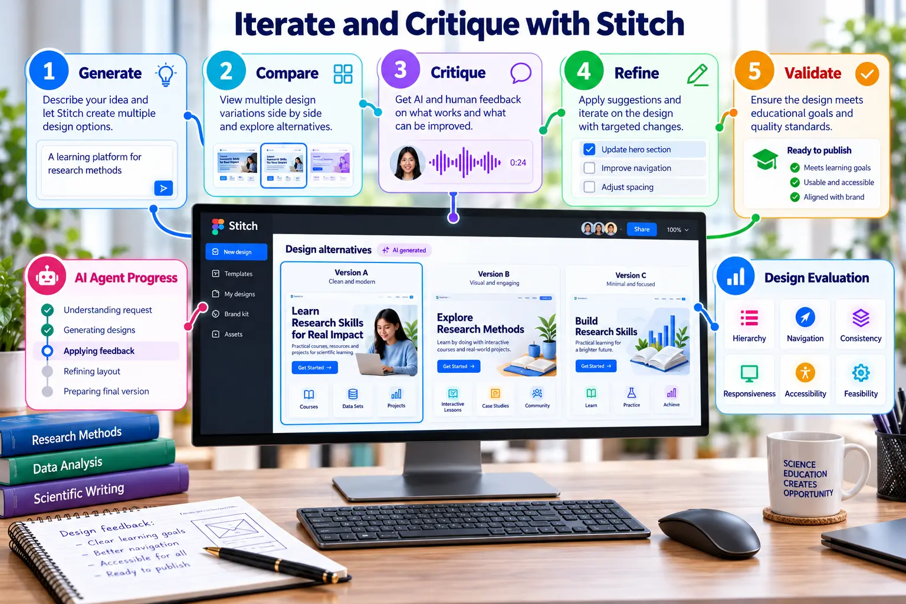

Iteration and Design Critique
Use AI-assisted exploration and human evaluation to improve interface quality systematically.

Evaluation matrix
| Criterion | Question |
|---|---|
| Hierarchy | Is the primary task immediately visible? |
| Navigation | Can users predict where an action leads? |
| Consistency | Are components and spacing systematic? |
| Responsiveness | Does the layout adapt without losing meaning? |
| Accessibility | Are labels, contrast and states understandable? |
| Feasibility | Can the interface be implemented responsibly? |
Evidence
- Three design directions.
- A completed evaluation matrix.
- Prompt V1 and V2.
- Before-and-after screenshots.
- Three explained human decisions.